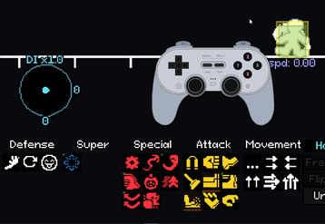

This mod is experimental. Things __will__ break. I cannot stress this enough.
How do I download this mod?
Step 1) Acess Steam Library.
Step 2) Left Click on YOMIH. Therein, you will find the Browse local files option.
Step 3) Locate YourOnlyMoveIsHUSTLE.pck. And BACK IT UP!!! I AM NOT RESPONSIBLE FOR ANY LOSS CAUSED BY YOU NOT BACKING YOUR .PCK UP!
Step 4) Replace it by the YourOnlyMoveIsHUSTLE.pck found on this page.
Step 5) Enjoy! Or don't. Probably more of the latter.
Features
This mod removes YOMIH's prediction system and makes it entirely realtime.
There are two main modes: Cooldown and Disabled (as in, there is no cooldown because it's disabled). They are both pretty self-explanatory. Do note that the Cooldown timer is adjustable, and that you cannot mash inputs during Disabled and have to sit the full IASA out. You can also adjust the game's speed from 1x, .5x, .25x, and .1x. 1x is basically unplayable.
-Controller support! Wait, what?
Not-Features
These are bugs. If the title wasn't clear.
-Block doesn't work on Disabled. Lol!
-Shift doesn't work. Fuck me.
-Stance changes suck right now in Disabled. Gun just adds itself to your list of moves because I'm an idiot
-Sliders don't work on controller :(
-XY Plots don't work on timerless on mouse
Keybinds
The controller binds are kind of awkward and I'm not sure I can really explain them through text so here is a neat picture:

Unrelated but I would like to credit BudCaveTV for making this beautiful 8BitDo SN30 Pro 2 controller diagram. You can find the original here: https://obsproject.com/forum/resources/8bitdo-pro2-sn30-pro-skins-for-input-overlay.2015/.
Red is the action selector, which decides which move you are going to next.
Orange is the XYPlot input. Something like Shuriken's angle will use this joystick.
Yellow is the DI input. Basically a C-Stick, except all the cool things got kicked out.
ABXY are shortcuts that take you from one category of move to the next. More specifically, B does normal attacks, Y does special attacks, X does defensive attacks, and A does movement attacks. Yes, supers are in fact missing. I am aware of this.
Green is effectively your Lock In. Here is a GIF of what the average turn might look like.

You can download this mod Here!